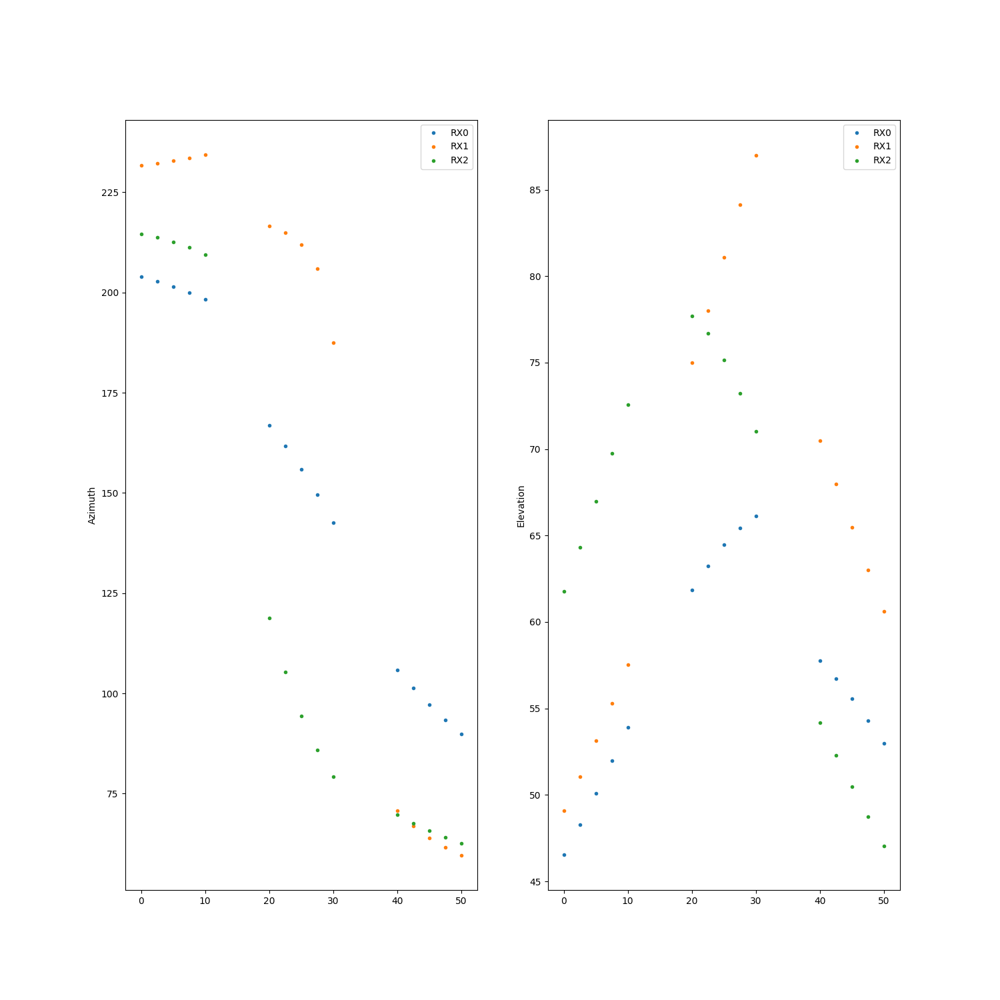

Note
Click here to download the full example code
Custom Scheduler¶

Out:
3 Orbits
t [s] rx0 az rx0 el rx1 az rx1 el rx2 az rx2 el Controller Target
------- -------- -------- -------- -------- -------- -------- ------------ --------
0 203.955 46.5231 231.719 49.0993 214.601 61.7555 Tracker Orbit 0
2.5 202.798 48.2655 232.232 51.0625 213.751 64.3226 Tracker Orbit 0
5 201.492 50.0799 232.82 53.1235 212.678 66.9872 Tracker Orbit 0
7.5 200.009 51.9645 233.502 55.2844 211.28 69.7409 Tracker Orbit 0
10 198.311 53.9154 234.301 57.5461 209.389 72.5708 Tracker Orbit 0
20 166.913 61.8378 216.621 75.0152 118.72 77.6884 Tracker Orbit 1
22.5 161.731 63.245 214.906 78.0249 105.349 76.709 Tracker Orbit 1
25 155.93 64.4648 211.977 81.0787 94.3689 75.1562 Tracker Orbit 1
27.5 149.534 65.4464 205.921 84.1314 85.7859 73.2159 Tracker Orbit 1
30 142.628 66.1417 187.428 87.0102 79.1702 71.0396 Tracker Orbit 1
40 105.762 57.7586 70.7574 70.4941 69.7183 54.1644 Tracker Orbit 2
42.5 101.271 56.7261 66.9308 67.98 67.6022 52.3054 Tracker Orbit 2
45 97.1333 55.5659 63.957 65.4775 65.7434 50.4928 Tracker Orbit 2
47.5 93.3483 54.3062 61.592 63.0177 64.1011 48.7342 Tracker Orbit 2
50 89.9017 52.9731 59.6727 60.6207 62.6421 47.0343 Tracker Orbit 2
from tabulate import tabulate
import numpy as np
import matplotlib.pyplot as plt
from mpl_toolkits.mplot3d import Axes3D
from matplotlib.animation import FuncAnimation
import pyorb
import sorts
from sorts.controller import Tracker
import sorts
eiscat3d = sorts.radars.eiscat3d
from sorts import Scheduler
from sorts.propagator import SGP4
Prop_cls = SGP4
Prop_opts = dict(
settings = dict(
out_frame='ITRF',
),
)
prop = Prop_cls(**Prop_opts)
class MyScheduler(Scheduler):
'''
'''
def __init__(self, radar, propagator):
super().__init__(radar)
self.propagator = propagator
self.orbits = None
def update(self, orbits):
'''Update the scheduler information.
'''
self.orbits = orbits
def get_controllers(self):
'''This should init all controllers and return a list of them.
'''
tv = [np.linspace(x*20,x*20+10,num=5) for x in range(len(self.orbits))]
ctrls = []
for ind in range(len(self.orbits)):
states = self.propagator.propagate(tv[ind], self.orbits.cartesian[:,ind], orb.epoch, A=1.0, C_R = 1.0, C_D = 1.0)
ctrl = Tracker(radar = self.radar, t=tv[ind], ecefs = states[:3,:])
ctrl.meta['target'] = f'Orbit {ind}'
ctrls.append(ctrl)
return ctrls
def generate_schedule(self, t, generator):
data = np.empty((len(t),len(self.radar.rx)*2+1), dtype=np.float64)
data[:,0] = t
names = []
targets = []
for ind,mrad in enumerate(generator):
radar, meta = mrad
names.append(meta['controller_type'].__name__)
targets.append(meta['target'])
for ri, rx in enumerate(radar.rx):
data[ind,1+ri*2] = rx.beam.azimuth
data[ind,2+ri*2] = rx.beam.elevation
data = data.T.tolist() + [names, targets]
data = list(map(list, zip(*data)))
return data
orb = pyorb.Orbit(M0 = pyorb.M_earth, direct_update=True, auto_update=True, degrees=True, num=3, a=6700e3, e=0, i=75, omega=0, Omega=np.linspace(79,82,num=3), anom=72, epoch=53005)
print(orb)
e3d = MyScheduler(radar = eiscat3d, propagator=prop)
e3d.update(orb)
data = e3d.schedule()
rx_head = [f'rx{i} {co}' for i in range(len(eiscat3d.rx)) for co in ['az', 'el']]
sched_tab = tabulate(data, headers=["t [s]"] + rx_head + ['Controller', 'Target'])
print(sched_tab)
fig = plt.figure(figsize=(15,15))
ax = fig.add_subplot(121)
for i in range(3):
ax.plot([x[0] for x in data], [x[1+i*2] for x in data], '.', label=f'RX{i}')
ax.legend()
ax.set_ylabel('Azimuth')
ax = fig.add_subplot(122)
for i in range(3):
ax.plot([x[0] for x in data], [x[2+i*2] for x in data], '.', label=f'RX{i}')
ax.legend()
ax.set_ylabel('Elevation')
plt.show()
# fig, ax =plt.subplots()
# collabel=("Time [s]",)
# for i in range(3):
# collabel += (f'RX{i} Az [deg]', f'RX{i} El [deg]')
# collabel += ('Dwell [s]',)
# ax.axis('tight')
# ax.axis('off')
# table = ax.table(cellText=data,colLabels=collabel,loc='center')
# table.set_fontsize(22)
# plt.show()
Total running time of the script: ( 0 minutes 0.412 seconds)